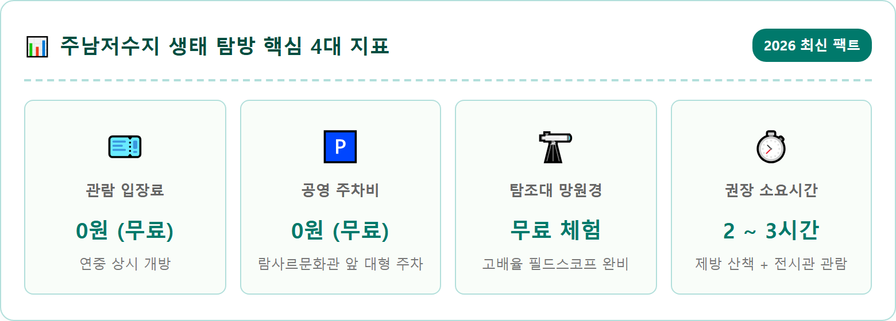
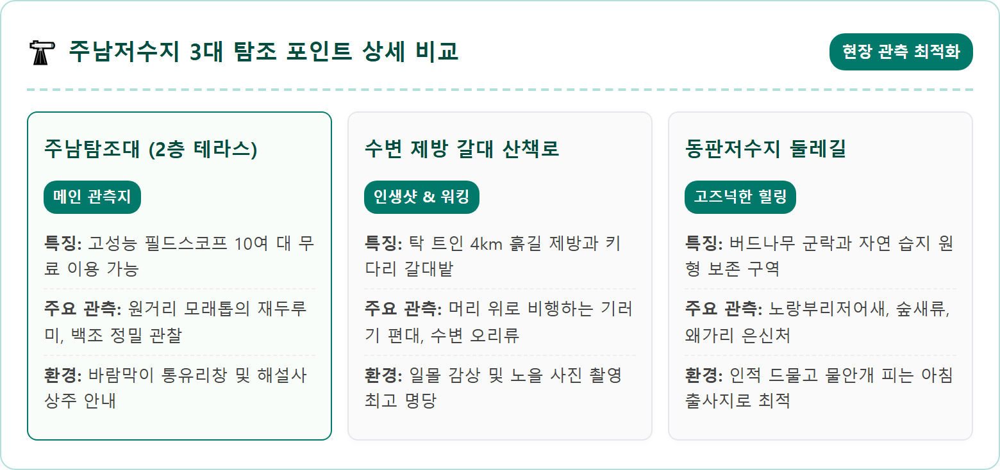
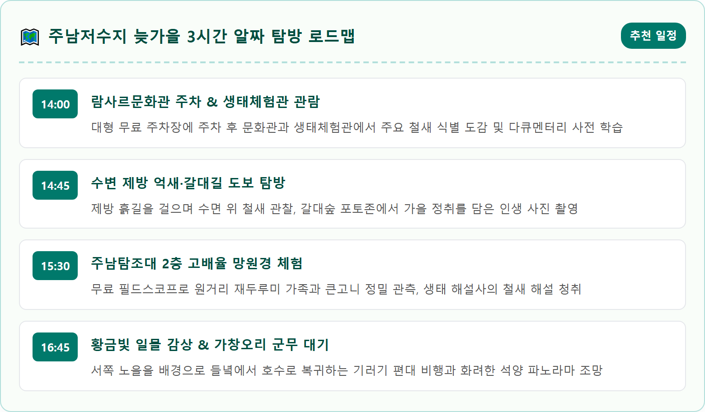
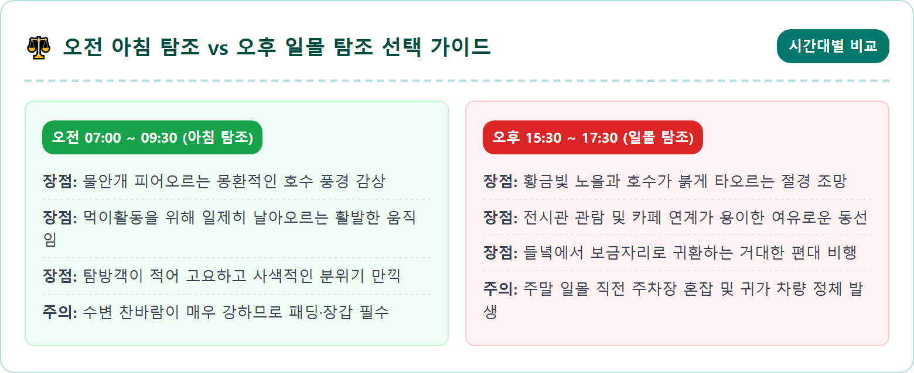
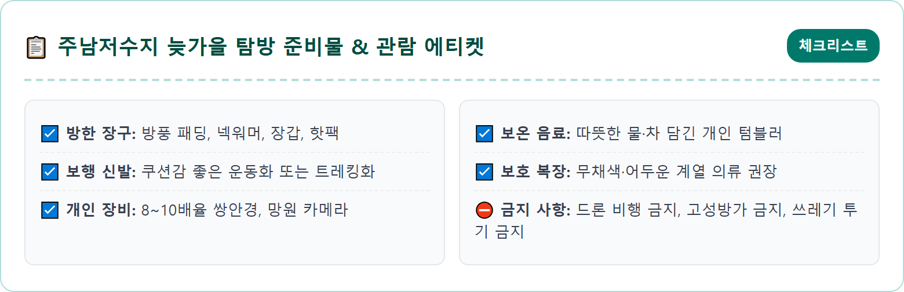
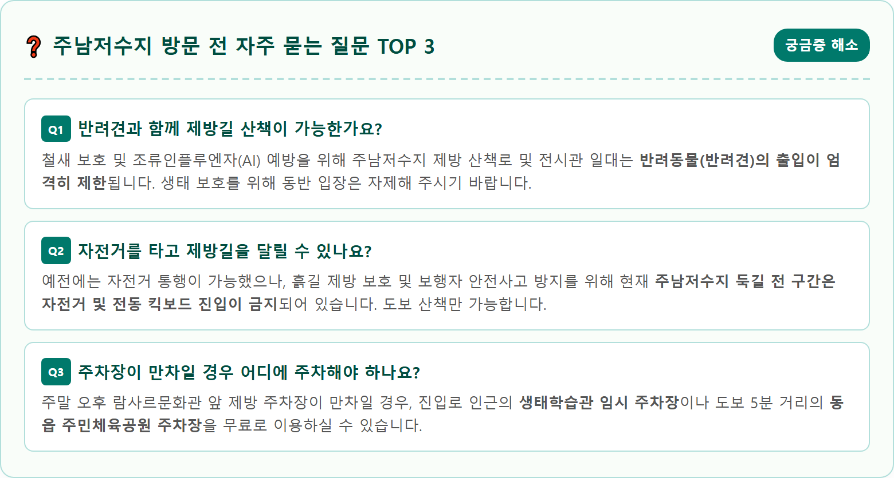

A breathtaking, photorealistic late autumn panoramic scene of Junam Reservoir in Changwon, South Korea. Golden sunset casting warm amber and orange reflections across the wide wetland waters. Thousands of migratory birds, including white-naped cranes and flocks of wild ducks, taking flight in sweeping formations against the twilight sky. In the foreground, tall, feathery silver reeds and pampas grass sway gently along a well-maintained wooden boardwalk walking trail. Visitors dressed in warm autumn outdoor clothing observe the wildlife peacefully. Ultra-detailed landscape photography, 8k resolution, crisp lighting, cinematic atmosphere, 1:1 aspect ratio.

경상남도 창원시 의창구 동읍에 자리 잡은 주남저수지는 산남, 주남, 동판 등 3개의 저수지가 유기적으로 연결된 총면적 602ha(약 180만 평) 규모의 영남권 최대 내륙 습지입니다. 사계절 내내 풍부한 수량과 수생식물 군락을 품고 있어 수많은 생명체의 보금자리가 되어주는 이곳은, 특히 차가운 북풍이 불어오기 시작하는 11월 중순이 되면 진정한 생명의 대장관을 연출합니다.
시베리아와 몽골, 중국 북동부 툰드라 지대에서 번식을 마친 수만 마리의 겨울 철새들이 월동을 위해 수천 킬로미터를 날아와 이곳 주남저수지에 깃들기 때문입니다. 천연기념물 제203호인 재두루미와 제201-2호 큰고니(백조), 노랑부리저어새, 그리고 수만 마리의 가창오리와 기러기 떼가 푸른 수면 위를 가득 메우는 광경은 오직 이 계절에만 마주할 수 있는 감동적인 생태 파노라마입니다.
도시의 소음에서 벗어나 드넓은 수평선 위로 바람에 일렁이는 황금빛 갈대숲을 걷고, 우아하게 날아오르는 철새들의 날갯짓을 바라보는 것만으로도 일상의 번잡함이 씻은 듯이 가라앉습니다. 아이들에게는 살아 숨 쉬는 자연 생태 교과서가 되고, 어른들에게는 고즈넉한 사색과 치유를 선사하는 늦가을 최고의 여행지입니다.
주남저수지에는 매년 겨울 평균 100여 종, 5만여 마리 이상의 철새가 찾아옵니다. 11월 중순에 접어들면 가장 먼저 눈에 띄는 귀객은 단연 '재두루미'와 '큰고니'입니다. 잿빛 몸통에 붉은 눈 주변이 특징인 재두루미는 저수지 중앙의 모래톱과 얕은 여울에서 가족 단위로 모여 먹이를 찾거나 휴식을 취하는 모습을 자주 관찰할 수 있습니다.
순백의 깃털을 뽐내는 큰고니는 주로 수생식물의 뿌리를 캐먹으며 물가 근처에서 한가롭게 유영합니다. 수면을 박차고 날아오를 때 긴 목을 뻗으며 내는 특유의 청아한 울음소리는 호수 전체에 장엄하게 울려 퍼집니다. 낮 동안에는 쇠오리, 청둥오리, 흰뺨검둥오리 등이 옹기종기 모여 자맥질하는 모습을 볼 수 있으며, 해질녘이 되면 들녘에서 낟알을 주워 먹던 큰기러기와 쇠기러기 무리가 줄을 지어 저수지로 귀환합니다.
운이 좋은 날에는 수만 마리의 가창오리 떼가 해질녘 하늘을 거대한 파도처럼 뒤덮으며 군무를 추는 경이로운 순간도 목격할 수 있습니다. 맹금류인 흰꼬리수리와 말똥가리가 상공을 선회할 때면 수면 위의 물새들이 일제히 긴장하며 수면 위로 흩어지는 역동적인 야생의 드라마도 펼쳐집니다.

주남저수지의 진정한 매력은 탐조대 안에서 망원경을 들여다보는 것에 그치지 않고, 드넓은 호수를 따라 조성된 흙길 제방을 여유롭게 걸을 때 비로소 완성됩니다. 람사르문화관 앞 제방길 입구에서부터 시작하여 주남탐조대를 지나 용산마을에 이르는 약 4km 구간의 수변 탐방로는 평탄하고 푹신한 마사토 흙길로 조성되어 있어 남녀노소 누구나 편안하게 걸을 수 있습니다.
제방 양옆으로는 어른 키를 훌쩍 넘는 은빛 갈대와 억새가 늦가을 바람에 서걱거리며 노래를 부릅니다. 호수 쪽으로는 끝없이 펼쳐진 수면과 철새들의 자맥질이 보이고, 반대편 들녘 쪽으로는 벼 베기가 끝난 고즈넉한 가을 논밭이 평화롭게 펼쳐져 있습니다. 걷는 도중 100m 간격으로 설치된 나무 가림막과 생태 관찰용 창문은 사람의 움직임에 놀라기 쉬운 철새들을 배려한 따뜻한 생태 시설입니다.
흙길을 밟으며 걷다 보면 머리 바로 위로 "끼룩끼룩" 소리를 내며 V자 대형으로 날아가는 기러기 떼의 날갯짓 소리가 생생하게 귓가를 스칩니다. 벤치에 앉아 따뜻한 보온병 차 한 잔을 들이켜며 저수지 너머로 기우는 햇살을 바라보는 시간은 어떤 쉼보다 깊은 평온을 선사합니다.
저수지 제방에 오르기 전, 입구 쪽에 나란히 자리한 '람사르문화관'과 '주남생태체험관'을 먼저 들르시면 탐방의 즐거움이 두 배로 커집니다. 람사르문화관은 2008년 창원에서 개최된 제10차 람사르총회를 기념하여 건립된 전시관으로, 람사르 협약의 역사와 전 세계 주요 습지의 생태적 가치를 알기 쉽게 전시하고 있습니다.
체험관 1층에서는 주남저수지에 서식하는 조류, 어류, 곤충, 수생식물의 박제와 표본을 실물 크기로 전시하고 있어 아이들의 호기심을 자극합니다. 2층 영상실에서는 계절별 주남저수지의 생태 변화를 다큐멘터리 영상으로 상영하여 철새들의 이동 경로와 생태 습성을 한눈에 이해할 수 있습니다. 전시관 관람료는 전액 무료이며, 실내 화장실과 수유실 등 편의시설이 깨끗하게 갖추어져 있습니다.
제방길 중심부에 위치한 2층 목조 건물인 '주남탐조대'에는 20여 대의 고배율 광학 필드스코프가 설치되어 있습니다. 동전을 넣을 필요 없이 누구나 무료로 이용할 수 있으며, 육안으로는 점처럼 보이던 저수지 중앙 모래톱의 재두루미 붉은 뺨과 큰고니의 검은 부리 끝까지 생생하게 관찰할 수 있습니다. 탐조대에는 생태 해설사가 상주하고 있어, 지금 보이는 새의 이름과 재미있는 습성에 대한 친절한 설명도 들을 수 있습니다.

주남저수지는 전국 사진 동호인들이 가을과 겨울에 가장 사랑하는 출사지 중 하나입니다. 저수지 수평선 너머 야트막한 능선 뒤로 붉게 물드는 석양과, 그 노을빛을 가르며 날아오르는 수천 마리의 철새 실루엣이 어우러져 한 폭의 동양화 같은 풍경을 빚어내기 때문입니다.
일몰 촬영의 최적 포인트는 주남탐조대에서 서쪽 수문 방면으로 500m가량 걸어 들어간 제방 곡선 구간입니다. 이곳에서는 호수 한가운데 자리한 왕버드나무 고목과 물안개, 그리고 붉은 노을이 한 앵글에 담겨 드라마틱한 구도를 만들어냅니다. 일몰 시간 약 40분 전부터 자리를 잡고 대기하는 것이 좋으며, 해가 지평선 아래로 완전히 내려간 직후 20분 동안 펼쳐지는 '매직 아워'에는 하늘이 보랏빛과 붉은빛으로 타오르며 몽환적인 분위기를 자아냅니다.
철새 촬영 시에는 200mm 이상의 망원 렌즈를 사용하는 것이 유리하며, 셔터 스피드는 날아가는 새의 날갯짓을 선명하게 포착하려면 최소 1/1000초 이상, 실루엣의 궤적을 부드럽게 표현하려면 1/250초 전후로 조절하는 것이 노하우입니다. 삼각대를 사용할 때는 제방길을 걷는 다른 탐방객들의 통행을 방해하지 않도록 가장자리에 설치하는 에티켓을 지켜주시기 바랍니다.

주남저수지는 넓은 수면이 사방으로 개방되어 있어 도심보다 체감 온도가 3~5도 이상 낮습니다. 특히 늦가을 오후 4시를 넘어서면 차가운 수변 바람이 강하게 불어오므로 보온 대책을 철저히 세우셔야 감기 없이 쾌적한 탐방을 즐길 수 있습니다.
방풍 기능이 있는 패딩 점퍼나 두터운 겉옷을 착용하시고, 목도리와 장갑, 귀마개 등을 챙기시는 것이 큰 도움이 됩니다. 제방길 왕복 4km를 걷는 데 1시간 이상 소요되므로 발이 편안한 운동화나 트레킹화 착용은 필수입니다. 야외에서 따뜻하게 마실 수 있는 온수 보온병과 간단한 간식을 챙겨오시면 좋습니다.
철새 생태를 지키기 위한 관람 안전 수칙도 반드시 지켜져야 합니다. 철새는 시각과 청각이 매우 예민하므로 화려한 원색(빨강, 노랑 등) 의류보다는 카키색, 베이지색 등 자연과 어우러지는 무채색 계열의 옷을 입는 것이 좋습니다. 드론 촬영은 철새들에게 극심한 스트레스를 주고 집단 폐사를 유발할 수 있어 문화재보호법에 따라 저수지 전 구역에서 엄격히 금지됩니다. 큰 소리로 소리를 지르거나 돌을 던지는 행위 역시 절대 삼가야 합니다.

주남저수지 제방길을 걷고 난 후 차량으로 3분, 혹은 도보로 15분 거리인 대산면 주호리로 이동하면 또 하나의 숨겨진 역사 명소인 '주남돌다리(창원 주남판석교)'를 만날 수 있습니다. 경상남도 문화유산자료로 지정된 주남돌다리는 약 800여 년 전 강남포 주민들이 동읍 판신마을로 통행하기 위해 주천강에 놓았던 다리로 전해집니다.
길이 4m가 넘는 거대한 화강암 판석을 얹어 만든 이 돌다리는 1969년 집중호우로 유실되었다가 주민들의 고증을 거쳐 1996년 원래의 모습을 되찾았습니다. 늦가을 맑은 개천 위로 소박하고 정겨운 돌다리가 놓인 풍경은 시골 외할머니 댁을 찾은 듯 푸근한 감성을 전해줍니다. 돌다리 위에 걸터앉아 갈대와 잔잔한 물결을 배경으로 사진을 남기면 고즈넉한 인생샷을 건질 수 있습니다.
시간적 여유가 더 있으시다면 람사르문화관에서 차로 5분 거리에 있는 '동판저수지' 둘레길도 추천합니다. 주남저수지보다 관광객의 발길이 적어 한층 더 원시적인 습지 풍경을 간직하고 있으며, 물속에 잠겨 자라나는 왕버드나무 군락과 고요한 수초 사이로 노니는 저어새와 왜가리를 더욱 가까이서 호젓하게 만날 수 있습니다.

주남저수지가 위치한 창원 동읍과 대산면 일대는 전국 최대의 생산량을 자랑하는 '창원 단감'의 주산지입니다. 11월은 당도가 최고조에 달한 제철 단감이 수확되는 시기로, 저수지 진입로 곳곳에서 산지 직송의 아삭하고 달콤한 단감을 착한 가격에 구입할 수 있는 직판장이 늘어섭니다.
특히 람사르문화관 인근 베이커리 카페에서는 창원 단감 말랭이를 듬뿍 넣어 구워낸 '창원 단감빵'과 '단감 파이'를 맛볼 수 있습니다. 은은한 단맛과 쫄깃한 식감이 어우러져 탐방 후 달콤한 티타임 간식이나 선물용으로 인기가 높습니다.
제방길 산책으로 출출해진 배를 든든하게 채우고 싶다면 동읍 마을 골목에 형성된 오리 요리 전문점을 추천합니다. 푹 고아낸 한방 유황오리백숙이나 매콤달콤한 오리불고기는 찬 바람에 언 몸을 녹여주는 대표 보양식입니다. 저수지가 내려다보이는 수변 통창 감성 카페에서 노을빛을 감상하며 따뜻한 핸드드립 커피 한 잔을 곁들이는 여유도 놓치지 마세요.
주남저수지는 창원 도심뿐만 아니라 부산, 김해, 대구 등 영남권 주요 도시에서 1시간 안팎으로 닿을 수 있어 당일치기 주말 드라이브 코스로 접근성이 매우 뛰어납니다.
내비게이션에는 '람사르문화관' 또는 '주남저수지'를 검색하시면 되며, 남해고속도로 동창원IC에서 나와 동읍 방면으로 약 10분가량 직진하면 호수 입구에 다다릅니다. 주차장은 람사르문화관 정문 앞과 도로 건너편에 대형 버스와 승용차 300여 대를 수용할 수 있는 대규모 아스팔트 주차장이 완비되어 있으며, 요금은 전액 무료입니다. 전기차 급속 및 완속 충전기도 마련되어 있습니다.
대중교통을 이용하실 경우 KTX 창원역이나 마산역에서 하차 후, 창원 시내버스 30번, 40번, 42번 등을 탑승하여 '주남저수지' 정류장에 하차하시면 정류장 바로 앞이 제방길 입구입니다. 시내버스 배차 간격은 약 30~40분 간격으로 운행되므로 버스 도착 알림 앱을 미리 확인하시는 것이 편리합니다.
| 항목 | 상세 안내 | 비고 및 팁 |
|---|---|---|
| 주소 | 경상남도 창원시 의창구 동읍 주남로101번길 26 | 내비게이션: 람사르문화관 주차장 |
| 이용 시간 | 제방길 00:00 ~ 24:00 (상시 개방) | 탐조대·문화관 09:30 ~ 17:30 (월요일 휴관) |
| 입장료/주차료 | 입장료 전액 무료 / 공영 주차장 무료 | 망원경 관측 및 전시관 무료 이용 |
| 권장 방문 시간 | 아침 07:00~09:00 또는 오후 16:00~17:30 | 철새 비행 활성기 및 황금빛 일몰 시간대 |
| 주변 연계지 | 주남돌다리(판석교), 동판저수지, 단감테마공원 | 차량 5~10분 거리 반일 코스 연계 |